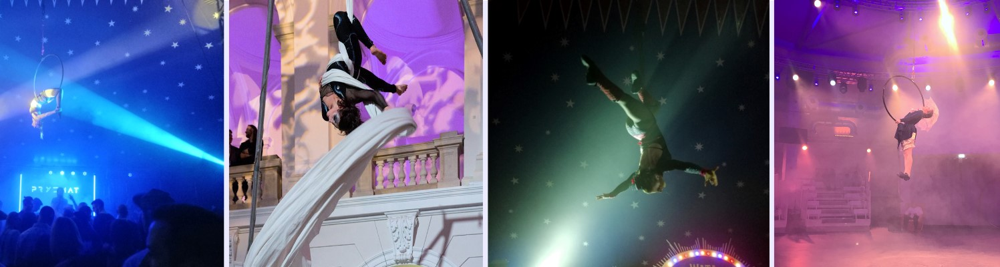

Pokazy akrobatyczne, dydaktyka, sędziowanie zawodów i inne
Pokazy
Szukasz czegoś niepowtarzalnego na swoje wydarzenie bądź imprezę? Taniec w powietrzu to niezapomniane widowisko dla Twoich gości! Oferuję pokazy dopasowane do Twojego eventu (np. otwarcie nowego lokalu), a także dłuższe improwizacje (np. w klubie nad uczestnikami zabawy).

Oferuję rownież widowiska komediowe przyjazne dzieciom: "Steve Irwin - Łowca krokodyli" oraz "Mary Poppins" (poniżej)
Zajęcia grupowe i indywidualne
Chcesz spróbować swoich sił w powietrzu? Regularne zajęcia prowadzę w Warszawie w Aerial Dance Studio oraz w Zakręcie koło Warszawy Klub Sportowy Zakręt. Możesz się zapisać na zajęcia grupowe poprzez strony klubów.
Jeśli interesują Cię zajęcia indywidualne to zapraszam w wybranym przez Ciebie terminie (umów się tu) . Zajęcia mogą się odbyć w jednym z wyżej wymienionych klubów lub zaproponowanej przez Ciebie lokalizacji. W ramach zajęć indywidualnych oferuję:
• Trening obejmujący naukę zarówno od początku jak i doskonalenie umiejętności na danym rekwizycie (koło, szarfy, hamak, trapez).
• Pomoc w przygotowaniu do zawodów i występów.
• Trening zorganizowany dla konkretnej, niewielkiej grupy osób (max 8) dostosowany do potrzeb np. mamy z dziećmi.
• Trening jako atrakcja w ramach konkretnego eventu, np. wieczór panieński, urodziny.
Warsztaty
Oferuję warsztaty dopasowane do potrzeb Twojego klubu i kursantów. Tematykę, czas trwania, ilość bloków i termin wybierzemy razem (kontakt). Oferta obejmuje całą Polskę. Przykładowe realizacje:
• Blok I: Trening przygotowujący dla zawodników Aerial Hoop, Blok II: Trening przygotowujący dla zawodników Aerial Silk.
• Blok I: Taniec na szarfie: Szpagaty i Balanse, Blok II: Dropy i inne elementy dynamiczne.
• Warsztat teatralno-aktorski skierowany do uczestników zawodów w kategoriach Art.
• Blok I: Sekwencje na szarfie, Blok II: Sekwencje na kole.
• Taniec na kole z elementami kalisteniki.

Sesje zdjęciowe i inne projekty
Realizujesz jakiś ciekawy projekt? Szukasz nietypowej prezentacji dla swojego produktu? A może masz zupełnie inny pomysł? Odezwij się, wymyślimy coś super (kontakt)!
Sędziowanie zawodów
Jeśli organizujesz zawody i szukasz sędziów zapraszam do kontaktu. Posiadam wieloletnie doświadczenia jako nauczyciel, zawodnik oraz sędzina. Sędziowałam następujące wydarzenia:
• I Ogólnopolski Turniej Strefy Wysokich Lotów
• II Ogólnopolski Turniej Strefy Wysokich Lotów
• Zakręceni na Taniec FLY: I turniej z cyklu GRAND PRIX